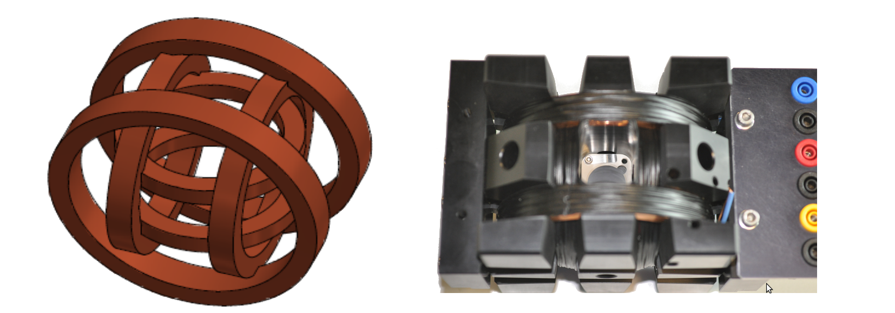

Step 1
Three intensity signals -one for each pair of Helmholtz coils- are simulated in the computer using a homemade LabVIEWTM script.
The script generates three simulated continuous sinusoidal signals as an output, from which the user can control the amplitude, the frequency and the phase sent to each coil. These parameters can be modified during the measurement.
Step 2
A 3-dimensional magnetic field is generated by a 3D Helmholtz Coils System (3D-HCS), consisting of three pairs of coils oriented in the three spatial directions (see Fig. below [2]).

The 3D-HCS has the following specifications:
| Coil | Smallest | Medium | Biggest |
|---|---|---|---|
| Diameter of the coil | 56 mm | 70 mm | 92 mm |
| Distance between parallel coils | 28 mm | 41 mm | 46 mm |
| Turns per coil | 349 | 362 | 370 |
| Length of wire per coil | 70,2 m | 80,9 m | 117,4 m |
The intensities from each coil are controlled by the computer, which is connected to a DAQmx card from National Instruments (NI USB-6259) digital-analog converter in order to transform the simulated signal into a physical intensity. This device has the following characteristics:
- 32 analog inputs (16-bit); 1.25 MS/s single-channel (1 MS/s aggregate)
- 4 analog outputs (16-bit, 2.8 MS/s); 48 digital I/O (32 clocked); two 32-bit counters
For applied intensities larger than approximately 35 mA, the system loses its linear behavior. The calibration has been calculated in the linear regime.
- X Coil: B(mT) = 0.29 mT/mA * I(mA) + 0.13 mT
- Y Coil: B(mT) = 0.30 mT/mA * I(mA) + 0.50 mT
- Z Coil: B(mT) = 0.13 mT/mA * I (mA) + 0.01 mT

Step 3
Limitations of the setup suggested that simulations could supplement more information on the behavior of the magnetic swimmers under stronger magnetic fields or longer time measurements. Furthermore, the parameters that define different characteristics of the medium can be easily modified in a simulation.
Simulations were carried out using Comsol. With this software, it was possible to visualize and quantify the magnetic field generated by a three pairs of Helmholtz coils system.
Step 4
The characteristics of the movement of the magnetic swimmers depend on many factors, including the geometry and the magnetic properties of the swimmer, the characteristics of the medium, among others. For the case of Dynabeads®, it was demonstrated in [7] that they assemble in rods and rotate under the influence of an oscillating magnetic field. Such assembly and rotational motion of Dynabeads® in rods was observed and measured (see figure below).

Directed movement for Dynabeads® of 2.8 μm has been also demonstrated.[8] Directed movement of the Dynabeads®suspension has not been observed in these experiments due to limitations in the setup used, such as an insufficient intensity of the magnetic field.
Long measurement times, as well as warming up of the coils for high intensities, may cause the drying of the sample. Once this happens, a directed movement of the suspended particles towards the boundaries of the droplet due to the coffee stain effect [6] becomes more important than the motion induced by the magnetic field.